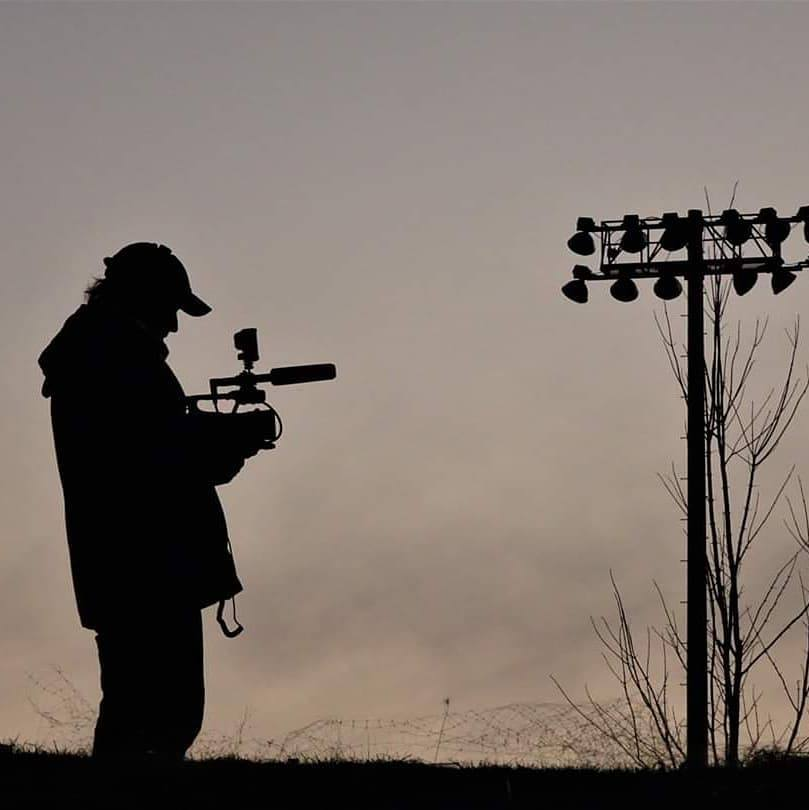

About Me
Nathanael Bray
Nathanael Bray is an aspiring writer and filmmaker. Nathanael was born and raised along the coast of Maine where he learned the craft of sail and wooden boatbuilding from a very young age, both from his father and many other skilled masters. At the young age of 19, Nathanael became a licensed captain and has sailed extensively, both as captain and crew, doing yacht deliveries, running charters, and teaching both seamanship and boatbuilding at the WoodenBoat School and privately. After over a decade spent in the world of boats and sailing, Nathanael moved west to California to begin his second career in the world of technology, working first as a contractor, then as a Network Analyst for several Silicon Valley Corporations before successfully running his own IT services company for a few years. After realizing he wasn’t living his passion and getting in touch with his love for art and cinema, Nathanael is now pursuing his interest in film at Howard Community College as a transfer student planning to attend UMBC for a BFA in Cinematic Arts.